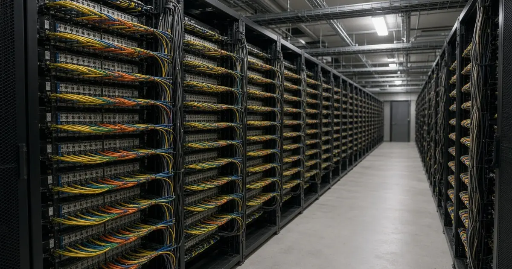
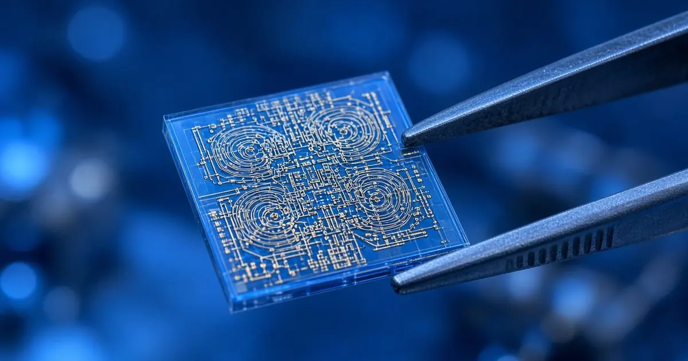

Algorithms
Why Post-Quantum Cryptography Matters for TLS 1.3
TLS 1.3 can combine classical elliptic-curve exchange with ML-KEM. Understand the new IETF hybrid groups, security rationale, and deployment tradeoffs.

TLS 1.3 can combine classical elliptic-curve exchange with ML-KEM. Understand the new IETF hybrid groups, security rationale, and deployment tradeoffs.

Shor’s algorithm uses quantum period finding to factor integers efficiently. See a small worked example, the RSA connection, and the hardware limitations.

IBM's "Quantum Queue Optimization for Error Mitigation" application describes a scheduler that groups compatible jobs on one chip and reuses stored noise models to cut repeated error-mitigation work.

Google DeepMind said on 6 November 2026 that human-guided AI agents uncovered two major weaknesses in legacy 1024-bit RSA cryptosystems, while stressing that modern 2048-bit systems remain safe from those specific exploits.

Harvest now, decrypt later means recording encrypted traffic today and breaking it once a large quantum computer exists. Here is how the threat works and why it sets the migration clock.

Alice & Bob's new preprint estimates that a fault-tolerant machine built from its cat qubits could factor RSA-2048 with 22,593 physical qubits in 3.14 days. It is a resource estimate on paper, not a demonstration, and it assumes hardware no one has built yet.

Checked on csrc.nist.gov on 2 November 2026, FIPS 206 for FN-DSA, NIST's planned Falcon-based signature standard, still has no public draft.

According to NIST, HQC is a code-based encryption algorithm chosen in March 2025 as a backup to ML-KEM, with a final standard expected in 2027.

According to NIST, FIPS 203, 204 and 205, effective 14 August 2024, cover key establishment (ML-KEM) and two signature methods (ML-DSA and SLH-DSA).

Iceberg Quantum's Pinnacle 1.2 says simulations show RSA-2048 factoring could need about 48,000 physical qubits and roughly a day under its best assumptions.